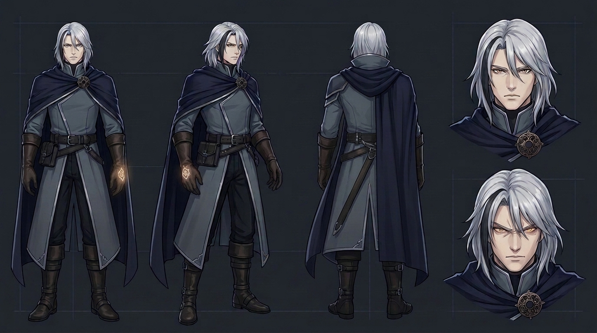

Dark-Fantasy Character Reference Sheet
Self-initiated original character turnaround and expression consistency sample prepared for 2D animation, 3D modeling reference, and AI-assisted visual production workflows.
Turnaround & Expression Study (Original Concept)


Original self-initiated sample (no client IP). Workflow disclosure: produced using an AI-assisted digital illustration pipeline with manual curation, consistency checks across silhouette/costume/palette, and clean turnaround framing. Also available with Blender 3D blockouts/turnarounds (see interactive 3D sample).